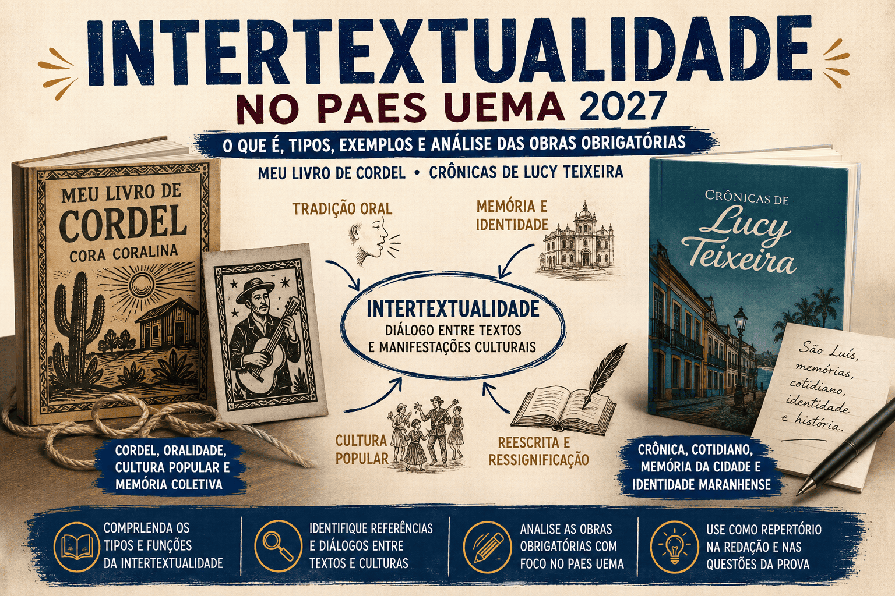

Intertextualidade: o que é e como aparece no PAES UEMA
A intertextualidade é um dos conteúdos mais importantes da interpretação de textos e da Literatura, sendo frequentemente explorada em vestibulares e concursos. No PAES UEMA, compreender como diferentes textos dialogam entre si é uma habilidade essencial para interpretar corretamente as questões e construir uma boa redação.
Esse conceito torna-se ainda mais relevante ao estudar duas das obras obrigatórias do PAES UEMA 2027: , de Cora Coralina, e Crônicas de Lucy Teixeira, organizadas por Ceres Costa Fernandes. Embora pertençam a gêneros diferentes — poesia e crônica —, ambas estabelecem diálogos com a cultura popular, a memória, a tradição oral e a identidade brasileira.
Neste guia completo, você compreenderá o conceito de intertextualidade, conhecerá seus principais tipos, verá exemplos práticos e descobrirá como esse recurso aparece nas obras exigidas pela UEMA e de que maneira pode ser cobrado na prova.

O que é intertextualidade?
A palavra intertextualidade significa, literalmente, "relação entre textos". O termo é formado pelo prefixo inter, que significa "entre", e pela palavra texto. Assim, ocorre intertextualidade quando um texto estabelece algum tipo de diálogo com outro texto produzido anteriormente ou até mesmo contemporaneamente.
Esse diálogo pode acontecer de maneira explícita, quando o autor menciona diretamente a obra ou seu autor, ou de forma implícita, quando apenas sugere uma referência que depende dos conhecimentos prévios do leitor para ser reconhecida.
Em outras palavras, nenhum texto é produzido completamente isolado. Todo escritor é influenciado pelas leituras que realizou, pelas manifestações culturais de sua época, pelas tradições literárias e pela própria sociedade em que vive. Essas influências aparecem naturalmente na construção de novas obras.
Por isso, ao identificar uma relação entre textos, o leitor amplia sua compreensão da mensagem, percebendo sentidos que poderiam passar despercebidos em uma leitura superficial.
Como surgiu o conceito de intertextualidade?
O conceito moderno de intertextualidade foi desenvolvido pela filósofa e linguista búlgara Julia Kristeva, na década de 1960, inspirando-se nos estudos do filósofo russo Mikhail Bakhtin.
Bakhtin defendia que toda linguagem é essencialmente dialógica. Para ele, sempre que alguém fala ou escreve, responde direta ou indiretamente a discursos produzidos anteriormente. Julia Kristeva ampliou essa ideia ao afirmar que todo texto é formado por fragmentos de outros textos.
Isso não significa que os autores simplesmente copiam obras anteriores. Pelo contrário: eles reinterpretam ideias, recriam significados, estabelecem novas perspectivas e oferecem novas leituras para temas já conhecidos.
Hoje, a intertextualidade é considerada um dos princípios fundamentais dos estudos linguísticos e literários, estando presente em praticamente todas as manifestações culturais.
Por que a intertextualidade é importante?
A intertextualidade desempenha um papel fundamental na comunicação porque permite que um texto dialogue com conhecimentos já compartilhados pelos leitores. Quanto maior for o repertório cultural de uma pessoa, maiores serão as possibilidades de compreender as referências presentes em um texto.
Na literatura, esse recurso possibilita que uma obra converse com outras obras, estabelecendo continuidades, contrapontos ou críticas. Já na publicidade, no cinema, na música e até mesmo nos memes da internet, a intertextualidade desperta humor, ironia, emoção ou reflexão.
Para quem fará o PAES UEMA, reconhecer essas relações representa uma vantagem importante, pois muitas questões exigem que o candidato compare textos, identifique referências culturais e compreenda os efeitos de sentido produzidos por essas aproximações.
Como a intertextualidade acontece?
Existem diversas maneiras pelas quais um texto pode estabelecer diálogo com outro. Algumas são bastante evidentes, enquanto outras exigem uma leitura mais atenta e um conhecimento prévio das obras envolvidas.
Conhecer essas modalidades facilita bastante a interpretação de textos nas provas do PAES UEMA.
1. Citação
A citação ocorre quando um trecho de outra obra é reproduzido literalmente. Normalmente, esse trecho aparece entre aspas ou acompanhado da indicação de seu autor.
O objetivo pode ser reforçar um argumento, homenagear outro escritor ou utilizar uma ideia já conhecida para produzir novos sentidos.
Exemplo:
"No meio do caminho tinha uma pedra."
Ao utilizar esse famoso verso de Carlos Drummond de Andrade, qualquer texto estabelece uma relação direta com o poema original, convidando o leitor a lembrar do contexto em que esse verso foi escrito.
2. Alusão
Na alusão, o autor apenas sugere outro texto ou personagem, sem reproduzir literalmente suas palavras.
A identificação dessa relação depende do conhecimento do leitor. Quanto maior seu repertório cultural, mais facilmente compreenderá os sentidos implícitos.
Por exemplo, quando um texto descreve alguém enfrentando "moinhos de vento", muitos leitores associam imediatamente essa imagem ao personagem Dom Quixote, criado por Miguel de Cervantes.
Essa associação amplia o significado do texto sem que seja necessário mencionar diretamente o romance espanhol.
3. Paráfrase
A paráfrase consiste em reescrever uma ideia utilizando palavras diferentes, mas preservando seu significado essencial.
Ela não busca fazer humor nem modificar a intenção do texto original. Seu objetivo é explicar, atualizar ou reapresentar uma mensagem de forma mais acessível.
Na educação, a paráfrase é muito utilizada para verificar se o estudante compreendeu corretamente um determinado texto.
4. Paródia
A paródia modifica o texto original para produzir humor, crítica ou ironia.
Ela costuma manter alguns elementos reconhecíveis da obra original, mas altera seu sentido para provocar um efeito diferente.
Atualmente, a paródia é extremamente comum em campanhas publicitárias, programas humorísticos e memes das redes sociais.
Em muitos casos, a graça da paródia depende justamente de o leitor conhecer o texto original.
5. Epígrafe
A epígrafe é um pequeno trecho colocado no início de um livro, capítulo ou artigo. Ela funciona como uma espécie de convite para a leitura, antecipando temas, ideias ou reflexões que serão desenvolvidos ao longo da obra.
Ao escolher determinada epígrafe, o autor já estabelece um diálogo explícito com outro texto, indicando ao leitor que existe uma relação entre as duas produções.
Onde encontramos intertextualidade?
Muitas pessoas imaginam que a intertextualidade pertence apenas ao universo da literatura. Na realidade, ela está presente em praticamente todas as formas de comunicação.
- Filmes inspirados em livros clássicos;
- Músicas que citam poemas famosos;
- Propagandas que fazem referência a personagens conhecidos;
- Charges políticas;
- Histórias em quadrinhos;
- Memes publicados nas redes sociais;
- Discursos políticos;
- Séries e novelas;
- Campanhas publicitárias.
Ao reconhecer essas referências, o leitor compreende melhor a intenção comunicativa do autor e percebe sentidos que não estão explícitos no texto.
Intertextualidade e repertório cultural
Quanto maior for o repertório cultural do leitor, maior será sua capacidade de identificar relações entre textos. É justamente por isso que os vestibulares valorizam tanto a leitura de obras literárias, jornais, artigos, poemas e crônicas.
No PAES UEMA, o estudante que conhece as obras obrigatórias consegue perceber diálogos entre diferentes textos da prova, interpretar com mais profundidade as questões e utilizar referências pertinentes na redação.
Nas próximas seções, veremos como esse diálogo aparece especificamente em Meu Livro de Cordel, de Cora Coralina, e em Crônicas de Lucy Teixeira, duas obras que valorizam a memória, a cultura popular e a construção da identidade brasileira sob perspectivas distintas, mas complementares.
Como a intertextualidade aparece no PAES UEMA?
A intertextualidade é um recurso bastante explorado pelo PAES UEMA porque está diretamente relacionada às competências de leitura e interpretação de textos. A banca não espera apenas que o candidato memorize conceitos literários ou informações sobre os autores, mas que seja capaz de estabelecer relações entre diferentes textos, reconhecer referências culturais e compreender os efeitos de sentido produzidos por essas conexões.
Na prática, isso significa que uma questão pode apresentar um poema, uma crônica, uma notícia, uma propaganda ou até uma charge e solicitar que o estudante identifique elementos que dialogam entre esses textos. Em muitos casos, o reconhecimento da intertextualidade é indispensável para chegar à resposta correta.
Além disso, a intertextualidade também pode aparecer de maneira indireta. Um texto pode abordar temas semelhantes aos das obras obrigatórias, utilizar um estilo narrativo parecido ou retomar símbolos e imagens já conhecidos da literatura brasileira.
Por esse motivo, estudar apenas o enredo das obras exigidas não é suficiente. É importante compreender seus temas centrais, suas características de linguagem e o contexto histórico em que foram produzidas.
O que a banca costuma avaliar?
Embora cada prova apresente questões diferentes, é comum que a UEMA avalie habilidades como:
- identificar relações entre dois ou mais textos;
- reconhecer referências culturais ou literárias;
- comparar pontos de vista sobre um mesmo tema;
- analisar como um texto amplia ou modifica o sentido de outro;
- interpretar recursos linguísticos utilizados para produzir determinados efeitos de sentido.
Essas habilidades não são cobradas apenas nas questões de Literatura. Elas aparecem também em perguntas de interpretação textual, análise linguística e, indiretamente, na produção da redação.
Intertextualidade em Meu Livro de Cordel
À primeira vista, o título da obra pode levar o leitor a imaginar que Cora Coralina escreveu um cordel tradicional semelhante aos produzidos no Nordeste brasileiro. Entretanto, ao longo da leitura, percebe-se que a autora realiza algo muito mais interessante: ela dialoga com a tradição do cordel sem simplesmente reproduzir suas características formais.
Esse é um excelente exemplo de intertextualidade. A autora conversa com uma tradição literária já consolidada, mas imprime nela sua própria identidade, sua experiência de vida e sua visão de mundo.
O diálogo com a literatura de cordel
O cordel é uma manifestação tradicional da cultura popular brasileira. Suas histórias costumam ser narradas em versos, utilizando linguagem simples, ritmo marcado e forte presença da oralidade.
Embora Meu Livro de Cordel apresente características próprias da poesia de Cora Coralina, diversos elementos aproximam sua escrita desse universo popular.
- valorização da linguagem cotidiana;
- presença de expressões populares;
- aproximação entre poesia e narrativa;
- resgate das memórias do povo;
- simplicidade vocabular sem perder profundidade estética.
Percebe-se, portanto, que a intertextualidade não ocorre porque a autora copia os folhetos de cordel, mas porque estabelece um diálogo com essa tradição cultural brasileira.
O diálogo com a tradição oral
Outro aspecto importante da obra é sua intensa relação com a oralidade.
Muitas passagens apresentam um ritmo semelhante ao da conversa entre familiares, lembrando histórias contadas por avós, vizinhos e moradores das pequenas cidades do interior.
Esse diálogo com a tradição oral também constitui uma forma de intertextualidade, pois recupera saberes transmitidos de geração em geração antes mesmo de serem registrados por escrito.
Ao transformar essas memórias em poesia, Cora Coralina preserva parte da cultura popular brasileira e demonstra que a literatura também pode nascer das experiências mais simples do cotidiano.
A memória como diálogo entre passado e presente
Grande parte dos poemas da obra estabelece uma conversa constante entre passado e presente.
A autora revisita sua infância, sua família, sua cidade e as pessoas comuns que fizeram parte de sua trajetória. Essas lembranças não aparecem apenas como recordações pessoais, mas como representação da memória coletiva de uma comunidade.
Assim, cada poema dialoga simultaneamente com dois textos: a experiência individual da autora e a história cultural do povo brasileiro.
Essa é uma característica muito importante da intertextualidade presente em Meu Livro de Cordel.
Exemplo de intertextualidade na obra
Ao abordar temas como a vida simples, o trabalho cotidiano, os quintais, os becos da cidade de Goiás e as tradições familiares, Cora Coralina aproxima sua poesia das narrativas orais populares.
O leitor percebe que esses poemas dialogam com histórias transmitidas ao longo das gerações, mesmo quando não existe uma citação direta de outro texto.
Esse diálogo valoriza a cultura popular e reforça a ideia de que toda produção literária está ligada às experiências humanas compartilhadas.
Intertextualidade em Crônicas de Lucy Teixeira
As crônicas de Lucy Teixeira apresentam outra forma bastante rica de intertextualidade.
Enquanto Cora Coralina aproxima sua poesia da tradição oral e da memória afetiva, Lucy Teixeira estabelece um diálogo constante com o cotidiano maranhense, com a história de São Luís e com a experiência coletiva de seus habitantes.
Cada crônica registra situações aparentemente simples, mas que revelam aspectos importantes da identidade cultural do Maranhão.
O diálogo com o cotidiano
A principal característica da crônica é transformar acontecimentos comuns em reflexão literária.
Lucy Teixeira observa pessoas, ruas, costumes, acontecimentos urbanos e pequenas experiências diárias. A partir dessas observações, constrói textos que dialogam diretamente com a realidade vivida pelos leitores.
Essa aproximação entre literatura e vida cotidiana constitui uma forma de intertextualidade, pois a autora incorpora acontecimentos reais ao universo literário.
O diálogo com a memória da cidade
Em diversas crônicas, Lucy Teixeira recupera lembranças da cidade de São Luís, descrevendo espaços, personagens e hábitos que fazem parte da memória coletiva maranhense.
Essas referências permitem que diferentes gerações reconheçam elementos da própria história ao longo da leitura.
Ao mesmo tempo, leitores de outras regiões conseguem compreender aspectos importantes da cultura local, ampliando sua visão sobre a identidade maranhense.
O diálogo com a tradição da crônica brasileira
Lucy Teixeira também estabelece uma relação com importantes cronistas brasileiros que transformaram o cotidiano em literatura.
Assim como ocorre nas obras de autores consagrados do gênero, suas crônicas valorizam pequenos acontecimentos que, à primeira vista, poderiam parecer insignificantes.
Entretanto, por meio de uma linguagem sensível e reflexiva, esses episódios passam a representar questões universais como o tempo, a memória, a convivência humana, as mudanças sociais e os sentimentos das pessoas.
Essa aproximação demonstra que sua escrita dialoga com uma tradição literária consolidada, ao mesmo tempo em que preserva características próprias da cultura maranhense.
O diálogo entre Meu Livro de Cordel e Crônicas de Lucy Teixeira
Embora pertençam a gêneros literários distintos — poesia e crônica —, Meu Livro de Cordel, de Cora Coralina, e Crônicas de Lucy Teixeira, organizadas por Ceres Costa Fernandes, estabelecem diversos pontos de aproximação. Essas relações constituem excelentes exemplos de intertextualidade temática e cultural, pois demonstram como diferentes autores podem dialogar entre si sem reproduzir exatamente a mesma linguagem ou estrutura textual.
Enquanto Cora Coralina transforma lembranças pessoais em poesia, Lucy Teixeira registra acontecimentos cotidianos em forma de crônica. Apesar dessa diferença, ambas escrevem sobre pessoas comuns, preservam memórias e valorizam a cultura local. Assim, as duas obras dialogam ao mostrar que a literatura pode surgir das experiências mais simples da vida cotidiana.
A valorização da memória
Um dos aspectos mais evidentes da aproximação entre as duas obras é a valorização da memória.
Em Meu Livro de Cordel, Cora Coralina revisita constantemente sua infância, a cidade de Goiás, a família, os becos, as casas antigas e os personagens que marcaram sua trajetória. Essas recordações não aparecem apenas como lembranças individuais, mas como forma de preservar a história de uma comunidade inteira.
Da mesma forma, Lucy Teixeira registra em suas crônicas acontecimentos, costumes e espaços urbanos que fazem parte da memória de São Luís. Ao narrar episódios aparentemente simples, ela contribui para preservar aspectos da identidade cultural maranhense.
Assim, ambas as autoras demonstram que recordar não significa apenas olhar para o passado. A memória torna-se instrumento de compreensão do presente e de preservação da história coletiva.
A cultura popular como fonte de inspiração
Outro importante ponto de intertextualidade está na valorização da cultura popular.
Cora Coralina aproxima sua poesia da oralidade, dos ditados populares, das histórias contadas entre gerações e dos saberes construídos pelo povo. Sua linguagem é simples, acessível e profundamente ligada às experiências do cotidiano.
Nas crônicas de Lucy Teixeira, essa valorização também ocorre quando a autora registra festas, tradições, modos de falar, hábitos urbanos e manifestações culturais características do Maranhão.
Embora cada autora escreva a partir de sua própria realidade, ambas demonstram que a cultura popular constitui um patrimônio digno de registro literário.
As pessoas comuns como protagonistas
Outro aspecto que aproxima as duas obras é a escolha de personagens comuns.
Em vez de reis, heróis ou figuras extraordinárias, as autoras voltam seu olhar para trabalhadores, crianças, idosos, comerciantes, vizinhos e moradores das cidades onde viveram.
Essa escolha produz um importante efeito literário: o leitor percebe que qualquer pessoa pode ser protagonista de uma boa história quando observada com sensibilidade.
Essa valorização do cotidiano representa uma característica marcante tanto da poesia de Cora Coralina quanto da crônica de Lucy Teixeira.
O cotidiano como matéria-prima da literatura
Um dos maiores exemplos de intertextualidade entre essas obras está na maneira como ambas transformam acontecimentos aparentemente simples em textos literários.
Cora Coralina encontra poesia em elementos cotidianos como a cozinha, os quintais, o trabalho doméstico, os becos e as lembranças familiares.
Lucy Teixeira, por sua vez, transforma conversas, passeios, paisagens urbanas, mudanças da cidade e situações do dia a dia em narrativas que levam o leitor à reflexão.
Essa aproximação demonstra que literatura não depende de acontecimentos extraordinários. Muitas vezes, os temas mais simples revelam profundas reflexões sobre a condição humana.
A linguagem simples e acessível
Outro diálogo importante entre as duas obras está na linguagem utilizada pelas autoras.
Cora Coralina nunca buscou escrever uma poesia excessivamente rebuscada. Sua linguagem aproxima-se da fala cotidiana, preservando expressões populares e construções próprias da oralidade.
Lucy Teixeira segue caminho semelhante. Suas crônicas apresentam uma escrita clara, leve e próxima da conversa com o leitor, característica tradicional desse gênero literário.
Essa simplicidade, entretanto, não significa pobreza de linguagem. Pelo contrário, demonstra domínio da escrita e capacidade de comunicar ideias profundas utilizando palavras acessíveis.
Exemplos de intertextualidade nas obras
Exemplo 1 – A tradição oral em Meu Livro de Cordel
Diversos poemas de Cora Coralina recuperam a maneira como histórias eram transmitidas oralmente entre familiares e moradores das pequenas cidades do interior. O ritmo da linguagem, a valorização das experiências populares e a presença de elementos do cotidiano fazem o leitor lembrar das narrativas contadas de geração em geração.
Mesmo quando não há referência explícita a um texto específico, percebe-se um diálogo constante com a tradição oral brasileira, constituindo uma forma de intertextualidade implícita.
Exemplo 2 – A memória da cidade nas crônicas
Nas crônicas de Lucy Teixeira, ruas, praças, casarões e acontecimentos históricos aparecem frequentemente como elementos centrais da narrativa.
Esses espaços deixam de ser apenas cenários e passam a representar a própria identidade cultural de São Luís. O leitor reconhece nesses ambientes aspectos da história da cidade e compreende que a literatura também desempenha um papel importante na preservação da memória coletiva.
Exemplo 3 – A valorização das tradições
As duas obras demonstram grande respeito pelas tradições culturais brasileiras.
Enquanto Cora Coralina preserva costumes ligados ao interior goiano, Lucy Teixeira registra hábitos característicos da sociedade maranhense.
Embora cada autora escreva sobre regiões diferentes, ambas contribuem para a valorização da diversidade cultural do Brasil.
Quadro comparativo
| Aspecto | Meu Livro de Cordel | Crônicas de Lucy Teixeira |
|---|---|---|
| Gênero | Poesia | Crônica |
| Principal foco | Memória afetiva e cultura popular. | Cotidiano e memória urbana. |
| Espaço predominante | Cidade de Goiás e ambiente interiorano. | São Luís e o cotidiano maranhense. |
| Intertextualidade predominante | Diálogo com a tradição oral e o cordel. | Diálogo com a história, a memória e a tradição da crônica brasileira. |
| Linguagem | Poética, simples e marcada pela oralidade. | Narrativa, leve, reflexiva e próxima da conversa. |
| Temas comuns | Memória, identidade cultural, cotidiano, pessoas comuns, valorização da cultura popular e preservação das tradições. | |
Como esse conteúdo pode aparecer na prova do PAES UEMA?
A banca costuma elaborar questões que exigem muito mais do que a simples memorização de conceitos. O estudante deve ser capaz de interpretar textos, identificar relações entre diferentes obras e compreender os efeitos produzidos pela intertextualidade.
Uma estratégia bastante utilizada consiste em apresentar um texto literário ao lado de uma notícia, uma charge, uma propaganda ou outro texto verbal e solicitar que o candidato identifique quais elementos aproximam essas produções.
Também é comum que a prova apresente um trecho de uma das obras obrigatórias e peça ao estudante que reconheça características relacionadas à memória, à cultura popular, ao cotidiano ou à identidade cultural, temas recorrentes tanto em Meu Livro de Cordel quanto em Crônicas de Lucy Teixeira.
- Identificar o tipo de intertextualidade presente em um texto.
- Reconhecer referências culturais implícitas.
- Comparar textos pertencentes a gêneros diferentes.
- Explicar como um texto amplia ou modifica o sentido de outro.
- Relacionar obras obrigatórias com textos contemporâneos.
- Interpretar efeitos de sentido produzidos pela intertextualidade.
Como utilizar essas obras na redação do PAES UEMA?
Além de serem importantes para as questões de Literatura e de interpretação de textos, Meu Livro de Cordel e Crônicas de Lucy Teixeira podem servir como excelentes repertórios socioculturais na redação do PAES UEMA.
O repertório sociocultural consiste em conhecimentos provenientes da literatura, da história, da filosofia, da ciência, das artes ou de outros campos do saber que ajudam a fundamentar os argumentos apresentados pelo candidato. Quando utilizado de forma pertinente, ele demonstra domínio do tema e torna a argumentação mais consistente.
As duas obras apresentam reflexões sobre memória, identidade, cultura popular, pertencimento, transformações sociais e valorização das experiências humanas. Esses assuntos dialogam com diversos temas que costumam aparecer nas propostas de redação dos vestibulares.
Exemplo 1 – Cultura e identidade
Caso a proposta de redação trate da valorização da cultura brasileira, da preservação das tradições ou da identidade regional, o candidato poderá mencionar que Cora Coralina transforma as experiências do povo e da tradição oral em poesia, demonstrando que a cultura popular constitui um importante patrimônio histórico e cultural.
Da mesma forma, poderá citar que Lucy Teixeira registra em suas crônicas o cotidiano de São Luís, preservando memórias e aspectos da identidade maranhense que poderiam ser esquecidos com o passar do tempo.
Exemplo 2 – Memória coletiva
Em temas relacionados à preservação da história, do patrimônio cultural ou das tradições locais, ambas as obras podem ser utilizadas para mostrar que a literatura desempenha um papel importante na construção da memória coletiva de uma sociedade.
Enquanto Cora Coralina eterniza personagens, costumes e lembranças do interior goiano, Lucy Teixeira faz o mesmo em relação aos espaços, às pessoas e às experiências vividas na capital maranhense.
Exemplo 3 – Valorização das pessoas comuns
Outro aspecto que pode fortalecer a argumentação é a forma como as duas autoras demonstram que qualquer indivíduo possui uma história digna de ser contada.
Em vez de concentrar a narrativa em personagens extraordinários, ambas direcionam seu olhar para pessoas comuns, revelando que as experiências cotidianas também contribuem para a construção da identidade cultural de um povo.
Essa reflexão pode ser utilizada em temas relacionados à cidadania, diversidade, inclusão social ou valorização das comunidades locais.
Dicas para identificar a intertextualidade durante a prova
Nem sempre a intertextualidade aparece de forma explícita. Em muitos casos, o candidato deverá perceber pequenas pistas deixadas pelo autor ao longo do texto.
Durante a leitura, procure observar os seguintes aspectos:
- referências a personagens conhecidos da literatura;
- citações de poemas, músicas ou obras literárias;
- provérbios, ditados populares e expressões tradicionais;
- reescritas de textos famosos;
- semelhanças entre temas abordados em diferentes textos;
- elementos históricos ou culturais retomados pelo autor;
- mudanças de sentido produzidas por ironia, humor ou crítica.
Quanto maior for o repertório de leitura do estudante, mais facilmente ele reconhecerá essas relações e compreenderá os efeitos de sentido produzidos pela intertextualidade.
Resumo
A intertextualidade é o diálogo estabelecido entre diferentes textos e manifestações culturais. Ela pode ocorrer por meio de citações, alusões, paráfrases, paródias ou outras formas de retomada de ideias, temas e estilos.
No PAES UEMA, esse conteúdo aparece principalmente nas questões de interpretação textual e de Literatura, exigindo que o candidato seja capaz de reconhecer relações entre obras, compreender referências culturais e interpretar seus efeitos de sentido.
As obras Meu Livro de Cordel e Crônicas de Lucy Teixeira constituem excelentes exemplos de intertextualidade cultural. Embora pertençam a gêneros diferentes, ambas dialogam com a memória, a tradição oral, a cultura popular, o cotidiano e a identidade regional, demonstrando que a literatura pode preservar histórias, costumes e experiências coletivas.
Ao compreender essas relações, o estudante amplia sua capacidade de interpretação, fortalece seu repertório sociocultural e aumenta suas chances de obter um bom desempenho tanto nas questões objetivas quanto na redação do PAES UEMA.
Conclusão
Compreender a intertextualidade é desenvolver uma leitura mais crítica, ampla e sensível. Ao perceber que os textos dialogam entre si, o estudante deixa de interpretar cada obra de forma isolada e passa a reconhecer as conexões que enriquecem a literatura e a comunicação.
No contexto do PAES UEMA, essa habilidade torna-se ainda mais importante, pois permite compreender com maior profundidade as obras obrigatórias, interpretar questões com segurança e utilizar repertórios literários de maneira pertinente na redação. Assim, estudar a intertextualidade não significa apenas aprender um conceito da teoria literária, mas adquirir uma competência essencial para toda a vida acadêmica.
Perguntas frequentes
O que é intertextualidade?
Intertextualidade é a relação de diálogo entre dois ou mais textos. Esse diálogo pode ocorrer de forma explícita, por meio de citações, ou de maneira implícita, quando um texto apenas sugere referências a outro.
Quais são os principais tipos de intertextualidade?
Os tipos mais estudados são a citação, a alusão, a paráfrase, a paródia e a epígrafe. Cada um estabelece relações diferentes entre os textos e produz efeitos específicos de sentido.
Por que a intertextualidade é importante no PAES UEMA?
Porque muitas questões exigem que o candidato compare textos, reconheça referências culturais e interprete relações entre diferentes obras literárias e gêneros textuais.
Como a intertextualidade aparece em Meu Livro de Cordel?
A obra dialoga com a tradição da literatura de cordel, com a oralidade, com a cultura popular e com as memórias coletivas, reinterpretando essas referências por meio da linguagem poética de Cora Coralina.
Como a intertextualidade aparece em Crônicas de Lucy Teixeira?
As crônicas estabelecem diálogo com a memória da cidade de São Luís, com acontecimentos históricos, com a cultura maranhense e com a tradição da crônica brasileira.
As duas obras dialogam entre si?
Sim. Embora sejam de gêneros diferentes, ambas valorizam a memória, o cotidiano, as pessoas comuns, a cultura popular e a construção da identidade cultural.
Posso utilizar essas obras na redação do PAES UEMA?
Sim. As duas leituras obrigatórias podem ser utilizadas como repertório sociocultural em temas relacionados à cultura, memória, patrimônio histórico, identidade regional, cidadania e valorização das tradições.
Como estudar intertextualidade para o vestibular?
O ideal é ler diferentes gêneros textuais, conhecer as obras obrigatórias do PAES UEMA, praticar a interpretação de textos e observar como autores estabelecem relações entre suas produções e outras manifestações culturais.
Referências
- BAKHTIN, Mikhail. Estética da criação verbal. São Paulo: Martins Fontes.
- CORALINA, Cora. Meu Livro de Cordel. São Paulo: Global Editora.
- FERNANDES, Ceres Costa (Org.). Crônicas de Lucy Teixeira. São Luís: EDUEMA.
- KRISTEVA, Julia. Introdução à semanálise. São Paulo: Perspectiva.
- BRASIL. Base Nacional Comum Curricular (BNCC). Ministério da Educação.
- MESTRE KIRA. Análise de Meu Livro de Cordel para o PAES UEMA 2027.
- MESTRE KIRA. Análise de Crônicas de Lucy Teixeira para o PAES UEMA 2027.
Explore Outros Conteúdos
Continue seus estudos acessando outras seções do site Mestre Kira: